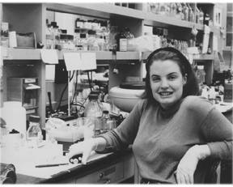

|
 | "To explore the possibilities of music: that summarizes our mission." |
|
I am now 23. I guess my latest label of what I do is probably work in a lab, a breast
cancer research lab studying the breast cancer suppressor protein BRCA1 that's been
linked to hereditary breast cancer. Also I’m studying an anti-cancer drug, developing a
resistant breast cancer cell line to this anticancer drug so we can study how these cells
resist this drug.
I started living with Kristen Brogden my sophomore year, fall of 93. That's probably when XDU started working its way into my life, very subtly at first, but through her involvement. She dragged me to some shows, basically went on and on about the station...I also lived, in spring of my junior year, with Prerana Readdy, who was on the music staff and was heavily involved at the station...During that spring I trained to be a DJ at XDU. Then my senior year, I was a DJ for the first time in the fall. And I lived with Kristen Brogden yet again. And now I’m living with another station manager and DJ. So I guess it's pretty much infiltrated every aspect of my life. XDU has probably eased that post-college transition. Some people have a really hard time with it. I haven't. I think I really enjoy my life now as much as I did in college. And XDU has really helped me in that transition. Starting out? I lucked out. Thursday 7-9 in the morning. I played a lot of indierock and pop. I’ve always had this thing for blues and I still do. Blues and country. Mostly vocal music, very little instrumental stuff. I’ve since gotten much more intrigued by instrumental music. I think I’ve gotten more particular about vocals and I guess it might be harder to please me for vocalists. It's not that I don't like vocals anymore, maybe I’m just a bit more selective . I really like instrumental music now because I think the real heart of music and instruments, what you can do with these instruments, all the kinds of sounds and noises you can make with these tools, it interests me more now. I think it has so many more possibilities and it allows for much more creativity and innovation. That is my perspective at this point. It's always evolving. That's what I’m into right now. I don't know if taste is the word as much as appreciations. I think it's inevitable your appreciation for certain types of music evolved while you're at XDU. You're exposed to so many types of music. You’re just darn lucky actually. I certainly hope that your appreciations would change because your material has just broadened so much. Unfortunately I think we have a very low acceptance at the university among the students...as in undergrads. I think the graduate students have become more selective in the kind of music they listen too, selective in the sense that they want something more than G105 and probably are a little more open to the types of music we play. I think that a lot of the administration and a lot of the professors at Duke respect what we do...They aren't necessarily avid supporters, as in going to our shows and what not, but they certainly support our mission I think. But we certainly need to work towards making the undergrad population aware of what we're about, why we're so great. To explore the possibilities of music: that summarizes our mission. I think of the word education commonly being used to describe our mission. I mean we're educating ourselves as much as our listeners. We're educating people about the possibilities of music, you know, the meaning of music, messages of music. We have much more diverse programming than any other radio station in this area. We have our specialty shows which do a terrific job of presenting a certain type of music. I think we serve a strong purpose to allowing community members to be a part of our organization...I think that's a huge contribution to the community. And I think it enhances our program and enhances our staff...makes us unique and all the better. I think the Duke undergrads who participate in the station learn a tremendous amount from community members, Duke and non-Duke, people who are professors, or are just people who work in the area, so many backgrounds. I think Duke is very homogeneous for the most part and XDU is a nice anomaly. I think that's a very important role of XDU, the community, but I think it extends to our music too. I know many people miss our absence now...it's nice to see we are appreciated beyond our immediate sphere. I think if you stick with us, if you get involved, that's the most important requirement, just to give us a chance, that you'll find that people here are incredibly accepting of all kinds of people...I think some people are initially very intimidated by XDU DJs. Everybody comes in there thinking they know a very little bit about music and are intimidated by DJs who know a lot more. |
But pretty soon those DJs will realize
that no, they probably first of all know a lot, or second of all, not everybody knows very
much, or a great deal about music. It pretty much doesn't matter...it is like a family to
me. I have so many rewarding relationships at the station that have come to mean quite
a lot to me. I don't know if we're particularly unique in this strong community feel...but
we’re much more low key, a little less competitive as far as music knowledge goes.
And I think we're much more diverse than other stations. And if you put your time in
and get involved, I think you'll find your niche where you can make a huge impact and
also find it a very rewarding experience.
I think one thing that's unique about our station is the large representation of women. women pretty much run the place first of all. You go to a show around here...and you might see a smattering of women...invariably they are related to XDU...I think women flourish under our structure. The governing body at XDU truly encourages people to take charge in some way, whatever they want to do. I don't know how I came upon organizing shows, I certainly got a lot of support to do it. I guess through doing giveaways I got really interested in the local bands and then when we were looking at having another benefit show, I said what the heck I’ll go ahead and do it. It was a huge undertaking and I had a blast. I can tell you that I have changed through this experience of organizing shows and working with the musicians and working with booking agents and promoters and potential celebrities, like mac from superchunk. Once I got over that, I just sort of developed this confidence, it sort of took over me. The overwhelming support of the station really bolstered my confidence. And then just the feedback from the musicians, they were just so appreciative of the effort I put into it. I most of all took great pleasure in seeing people coming out for music and enjoying it and being affected by it. It was also an excellent opportunity for the station to get its name out and help with our public perceptions of the station. I really wanted to make us more visible...especially as we are in this period of inaccessibility, to have our name out there so people don't forget about us. I love Durham, I really want to bring people here. I love the Coffeehouse and Captured Live. I think they're some of the best places to hear music in the triangle. I think we've got a good thing going here. College radio is the last bastion of creativity on radio, most everything that falls through the cracks of commercial radio, which is 95% of all music and 90% of what's good...It allows for an unbiased presentation of music. There's so many reasons for [our selectivity]. It could that it gets so much play on commercial radio that we shouldn’t be wasting our time with it. The fact that the DJ has the freedom to play something...they need to do that to develop their own tastes of music or their own knowledge of music, but I don't think we should prevent people from being able to play certain types of things. Yeah, we discourage things but a lot of DJs don't even have a clue and you have to have that training time..If someone sticks around long enough they get a feel for the kinds of music we encourage and our mission of representing under represented music. I wish that we had more students involved. We really need to increase our numbers...I really wish we were more popular on campus and that we were able to be more selective with our quality of DJs...Its hard to for me to think of it in these terms, like student and non-student. I really think of them as people...I wish that XDU could reach more people. I wish we had more support from the student population, but ii don’t think that's entirely our fault. Cause the types of students attending Duke are more and more conservative and less artistically oriented. I think that a lot of people have gone by the wayside. I’m sure we're going to get a wave of trainees when we get back on the air. It's been excellent publicity for the station. we've gotten major articles in the news and observer and the herald sun, not to mention the independent and the spectator. It's pretty unprecedented. I think it would be hard to determine the ramefications of this antenna fiasco until we are through. We're truly stuck in the middle of it and right now we aren't heard. There's no question we're going to come out better with this new system and publicity. It's just getting us back on the air that's frustrating. I hope not too many people have suffered - the students who aren't going to be here for our new system, I hope they don't feel shortchanged too much. We don't really have, let’s say, a Latin specialty or Latin music or reggae or...we don't have much representation beyond much urban and African-Americans do mostly the urban shows...I wish we had a little more international representation. Necessary? It's almost like I want to say "all of the above."...I hope we can serve our community better with a better antenna, better reception in the triangle area. That will be fantastic, we really have been handicapped....It's a source of creative music, culturally important music, and it really brings together people with common interests and whenever you do that, it can either work well or not. I think everyone can agree that we have something special here. Yeah, XDU is a necessary part of my life. |